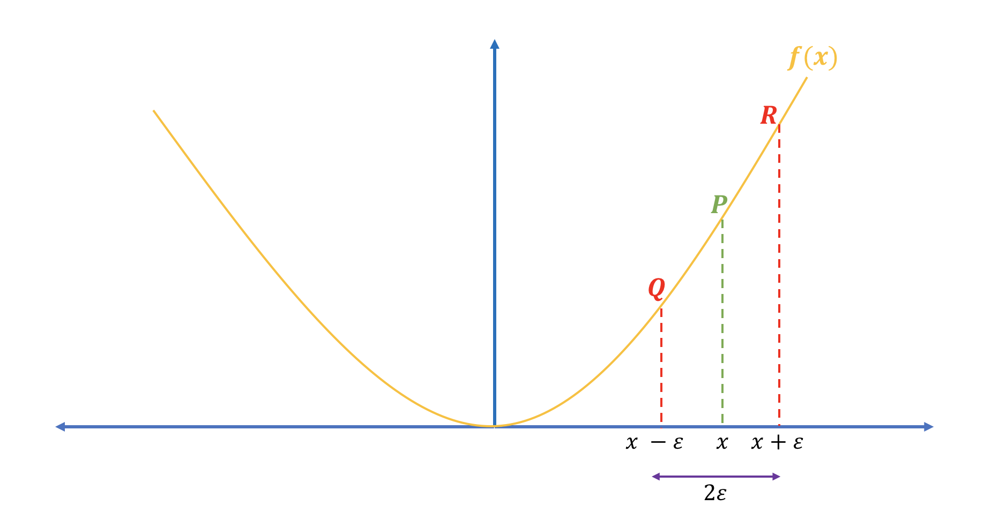

How to check numerically if the implementation of backward propagation is correct?
Machine Learning
Deep Learning
Author
Imad Dabbura
Published
April 8, 2018
Introduction
In the previous post, Coding Neural Network - Forward and Backward Propagation, we implemented both forward propagation and backpropagation in numpy. However, implementing backpropagation from scratch is usually more prune to bugs/errors. Therefore, it’s necessary before running the neural network on training data to check if our implementation of backpropagation is correct. Before we start, let’s revisit what back-propagation is: We loop over the nodes in reverse topological order starting at the final node to compute the derivative of the cost with respect to each edge’s node tail. In other words, we compute the derivative of cost function with respect to all parameters, i.e \(\frac{\partial J}{\partial \theta}\) where \(\theta\) represents the parameters of the model.
The way to test our implementation is by computing numerical gradients and compare it with gradients from backpropagation (analytical). There are two way of computing numerical gradients:
Two-sided form (see figure 1): \[\frac{J(\theta + \epsilon) - J(\theta - \epsilon)}{2 \epsilon}\tag{2}\]

Figure 1: Two-sided numerical gradients
Two-sided form of approximating the derivative is closer than the right-hand form. Let’s illustrate that with the following example using the function \(f(x) = x^2\) by taking its derivative at \(x = 3\). - Analytical derivative: \[\nabla_x f(x) = 2x\ \Rightarrow\nabla_x f(3) = 6\] - Two-sided numerical derivative: \[\frac{(3 + 1e-2)^2 - (3 - 1e-2)^2}{2 * 1e-2} = 5.999999999999872\] - Right-hand numerical derivative: \[\frac{(3 + 1e-2)^2 - 3^2}{1e-2} = 6.009999999999849\] As we see above, the difference between analytical derivative and two-sided numerical gradient is almost zero; however, the difference between analytical derivative and right-sided derivative is 0.01. Therefore, we’ll use two-sided epsilon method to compute the numerical gradients.
In addition, we’ll normalize the difference between numerical. gradients and analytical gradients using the following formula: \[\frac{\|grad - grad_{approx}\|_2}{\|grad\|_2 + \|grad_{approx}\|_2}\tag{3}\] If the difference is \(\leq 10^{-7}\), then our implementation is fine; otherwise, we have a mistake somewhere and have to go back and revisit backpropagation code.
Below are the steps needed to implement gradient checking: 1. Pick random number of examples from training data to use it when computing both numerical and analytical gradients. - Don’t use all examples in the training data because gradient checking is very slow. 2. Initialize parameters. 3. Compute forward propagation and the cross-entropy cost. 4. Compute the gradients using our back-propagation implementation. 5. Compute the numerical gradients using the two-sided epsilon method. 6. Compute the difference between numerical and analytical gradients.
We’ll be using functions we wrote in “Coding Neural Network - Forward Propagation and Backpropagation” post to initialize parameters, compute forward propagation and back-propagation as well as the cross-entropy cost.
Let’s first import the data.
Code
import sysimport h5pyimport matplotlib.pyplot as pltimport numpy as npfrom numpy.linalg import normimport seaborn as snssys.path.append("../../scripts/")from coding_neural_network_from_scratch import ( initialize_parameters, L_model_forward, L_model_backward, compute_cost,)%matplotlib inlinesns.set_context("notebook")plt.style.use("fivethirtyeight")
Next, we’ll write helper functions that faciltate converting parameters and gradients dictionaries into vectors and then re-convert them back to dictionaries.
Code
def dictionary_to_vector(params_dict):""" Roll a dictionary into a single vector. Arguments --------- params_dict : dict learned parameters. Returns ------- params_vector : array vector of all parameters concatenated. """ count =0for key in params_dict.keys(): new_vector = np.reshape(params_dict[key], (-1, 1))if count ==0: theta_vector = new_vectorelse: theta_vector = np.concatenate((theta_vector, new_vector)) count +=1return theta_vectordef vector_to_dictionary(vector, layers_dims):""" Unroll parameters vector to dictionary using layers dimensions. Arguments --------- vector : array parameters vector. layers_dims : list or array_like dimensions of each layer in the network. Returns ------- parameters : dict dictionary storing all parameters. """ L =len(layers_dims) parameters = {} k =0for l inrange(1, L):# Create temp variable to store dimension used on each layer w_dim = layers_dims[l] * layers_dims[l -1] b_dim = layers_dims[l]# Create temp var to be used in slicing parameters vector temp_dim = k + w_dim# add parameters to the dictionary parameters["W"+str(l)] = vector[ k:temp_dim].reshape(layers_dims[l], layers_dims[l -1]) parameters["b"+str(l)] = vector[ temp_dim:temp_dim + b_dim].reshape(b_dim, 1) k += w_dim + b_dimreturn parametersdef gradients_to_vector(gradients):""" Roll all gradients into a single vector containing only dW and db. Arguments --------- gradients : dict storing gradients of weights and biases for all layers: dA, dW, db. Returns ------- new_grads : array vector of only dW and db gradients. """# Get the number of indices for the gradients to iterate over valid_grads = [key for key in gradients.keys()ifnot key.startswith("dA")] L =len(valid_grads)//2 count =0# Iterate over all gradients and append them to new_grads listfor l inrange(1, L +1):if count ==0: new_grads = gradients["dW"+str(l)].reshape(-1, 1) new_grads = np.concatenate( (new_grads, gradients["db"+str(l)].reshape(-1, 1)))else: new_grads = np.concatenate( (new_grads, gradients["dW"+str(l)].reshape(-1, 1))) new_grads = np.concatenate( (new_grads, gradients["db"+str(l)].reshape(-1, 1))) count +=1return new_grads
Finally, we’ll write the gradient checking function that will compute the difference between the analytical and numerical gradients and tell us if our implementation of back-propagation is correct. We’ll randomly choose 1 example to compute the difference.
Code
def forward_prop_cost(X, parameters, Y, hidden_layers_activation_fn="tanh"):""" Implements the forward propagation and computes the cost. Arguments --------- X : 2d-array input data, shape: number of features x number of examples. parameters : dict parameters to use in forward prop. Y : array true "label", shape: 1 x number of examples. hidden_layers_activation_fn : str activation function to be used on hidden layers: "tanh", "relu". Returns ------- cost : float cross-entropy cost. """# Compute forward prop AL, _ = L_model_forward(X, parameters, hidden_layers_activation_fn)# Compute cost cost = compute_cost(AL, Y)return costdef gradient_check( parameters, gradients, X, Y, layers_dims, epsilon=1e-7, hidden_layers_activation_fn="tanh"):""" Checks if back_prop computes correctly the gradient of the cost output by forward_prop. Arguments --------- parameters : dict storing all parameters to use in forward prop. gradients : dict gradients of weights and biases for all layers: dA, dW, db. X : 2d-array input data, shape: number of features x number of examples. Y : array true "label", shape: 1 x number of examples. epsilon : tiny shift to the input to compute approximate gradient. layers_dims : list or array_like dimensions of each layer in the network. Returns ------- difference : float difference between approx gradient and back_prop gradient """# Roll out parameters and gradients dictionaries parameters_vector = dictionary_to_vector(parameters) gradients_vector = gradients_to_vector(gradients)# Create vector of zeros to be used with epsilon grads_approx = np.zeros_like(parameters_vector)for i inrange(len(parameters_vector)):# Compute cost of theta + epsilon theta_plus = np.copy(parameters_vector) theta_plus[i] = theta_plus[i] + epsilon j_plus = forward_prop_cost( X, vector_to_dictionary(theta_plus, layers_dims), Y, hidden_layers_activation_fn)# Compute cost of theta - epsilon theta_minus = np.copy(parameters_vector) theta_minus[i] = theta_minus[i] - epsilon j_minus = forward_prop_cost( X, vector_to_dictionary(theta_minus, layers_dims), Y, hidden_layers_activation_fn)# Compute numerical gradients grads_approx[i] = (j_plus - j_minus) / (2* epsilon)# Compute the difference of numerical and analytical gradients numerator = norm(gradients_vector - grads_approx) denominator = norm(grads_approx) + norm(gradients_vector) difference = numerator / denominatorif difference >10e-7:print ("\033[31mThere is a mistake in back-propagation "+\"implementation. The difference is: {}".format(difference))else:print ("\033[32mThere implementation of back-propagation is fine! "+\"The difference is: {}".format(difference))return difference
Code
# Set up neural network architecturelayers_dims = [X_train.shape[0], 5, 5, 1]# Initialize parametersparameters = initialize_parameters(layers_dims)# Randomly selecting 1 example from training dataperms = np.random.permutation(X_train.shape[1])index = perms[:1]# Compute forward propagationAL, caches = L_model_forward(X_train[:, index], parameters, "tanh")# Compute analytical gradientsgradients = L_model_backward(AL, y_train[:, index], caches, "tanh")# Compute difference of numerical and analytical gradientsdifference = gradient_check(parameters, gradients, X_train[:, index], y_train[:, index], layers_dims)
There implementation of back-propagation is fine! The difference is: 3.02205552997035e-09
Congratulations! Our implementation is correct :)
Conclusion
Below are some key takeaways:
Two-sided numerical gradient approximates the analytical gradients more closely than right-side form.
Since gradient checking is very slow:
Apply it on one or few training examples.
Turn it off when training neural network after making sure that backpropagation’s implementation is correct.
Gradient checking doesn’t work when applying drop-out method. Use keep-prob = 1 to check gradient checking and then change it when training neural network.
Epsilon = 10e-7 is a common value used for the difference between analytical gradient and numerical gradient. If the difference is less than 10e-7 then the implementation of backpropagation is correct.
Thanks to Deep Learning frameworks such as Tensorflow and Pytorch, we may find ourselves rarely implement backpropagation because such frameworks compute that for us; however, it’s a good practice to understand what happens under the hood to become a good Deep Learning practitioner.